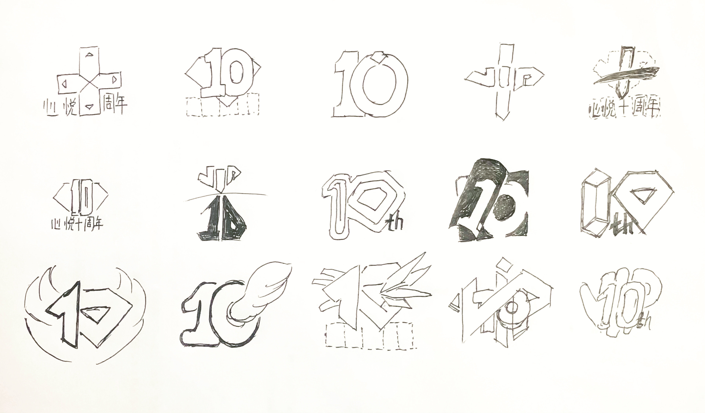
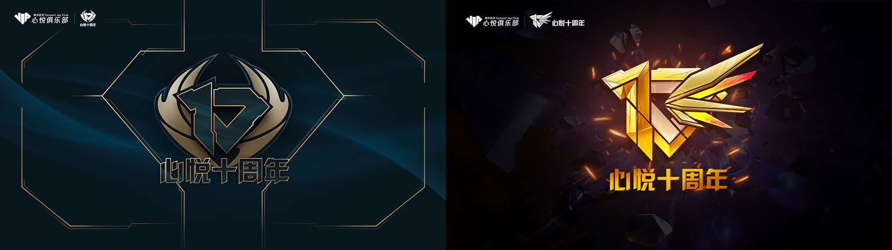
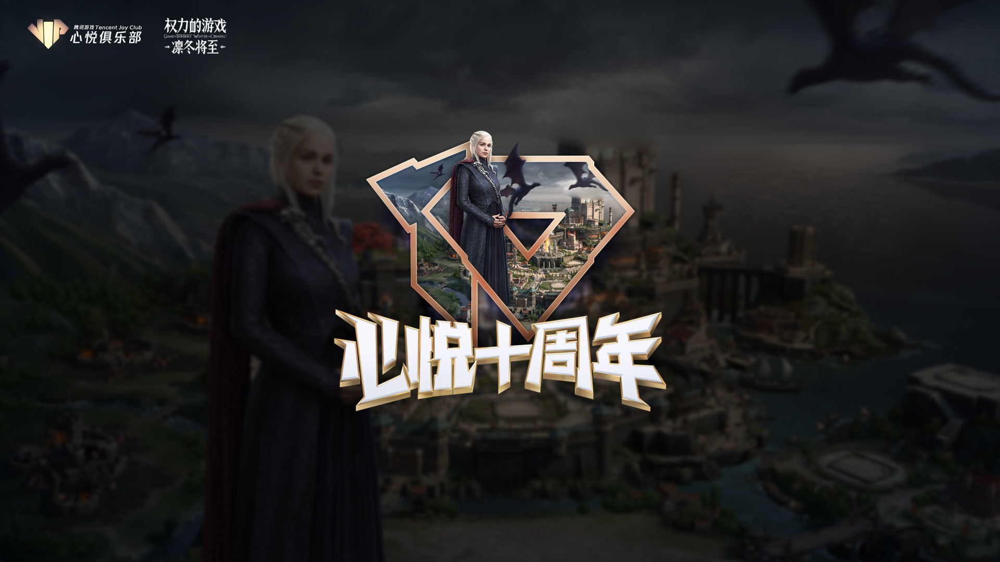

一 项目背景
心悦俱乐部从诞生到现在（2020年）历经十周年，在此“生日”之际，我们想通过一系列活动，增加心悦品牌力&影响力，达到品宣效果。作为本项目在品牌视觉包装模块的主要负责人，我将代表设计团队的小伙伴，从品牌设计与活动包装的视角切入，讲述我们的深度思考和尝试。接下来，一起看下我们的整体解决方案和背后的思考。
二 需求分析
首先，我们对此需求进行基础分析：
这里还是用了经典的WWWW法，从各维度理清思路；
What，（定位分析）
我们明确了这一系列一品牌维度为主的“庆生”活动，我们需要的是“声量高”“传播广”，就像人们过生日一样热热闹闹、高朋满座。
同时我们也研究了很多产品“庆生”怎么搞，从而制定我们的设计策略。
Where/When，（场景分析）
我们盘点了需要做的所有事情，场景里包含线上线下各个环节，所以针对这些各个环节我们再前期设计时就要考虑视觉的适配和运用场景，比如：有的活动是线上活动移动端页面、PC品宣页面、线下活动场馆、舞美、海报及周边等等，有的活动同时包含上述这些，每种场景的视觉运用在设计之初就应该提前考虑到。
Who，（受众分析）
一个视觉包装很重要的一点就是需要知道用户是谁，他们有着怎么样的特征标签，和哪些用户习惯和审美偏好。

通过用研分析，我们看到心悦的用户群体基本属于以下特征：以男性为主、青年、主要生活在一线城市、高学历、高收入、会消费娱乐、在游戏中高频次付费、时间充裕…
Why，（目的意义）
基于以上分析我们可以得出一些结论，但我们不忘再想一下做这些事情的目的及意义，这样可以自检在后续是设计执行落地过程中有没有跑偏方向，理清楚动机再做执行我们就不会盲目的跑，直击目标。

三 设计执行
基于上述分析研究，此项目核心是主视觉的设计，主流有两种设计思路：1，主标识+画面氛围（主视觉）；2、主品牌色+logo（去主视觉化）。经过分析，后者更适合线下发布会会场的这种场景和主品牌为主体的表达，而我们心悦十周年这种“庆生”类活动还是适用思路1，可营造出“庆生”的氛围感。
这样我们需要设计一个“心悦十周年”的主标识，把这些想要表达的核心信息分别拆散重组。例如：心悦，我们可以发散出“钻石”、“VIP”的关联想象，然后这两个词有可以发散出“闪耀”“高价值”“尊贵”等词的关联想象，以此类推。我们再把这些词关联重组看看哪些有可能产出一些新的东西。
依照这个思路我们绘制了一些草图，如下：

当然，评判这些标识我们用了两个维度：常规——新颖、难识别——易识别，抛去不太合适的标识（比如有宗教意味的“十”），剩下的我们当然再又新颖又易识别的范围内寻找方案。
根据上述坐标的评判结论，我们又对可行的方向尝试，得出一些对应方向的延展。
（一些思路的风格化实验）
综合考虑最终选择了表意和视觉都相对平衡的方案：10+钻石+翅膀
（选定了“10+钻石+翅膀”的方案）

（风格化尝试）
再次进行风格化尝试，并发现问题，如：左边的方案钻石形状被遮挡，右边方案翅膀不够具象，同时也会遮挡钻石形状。优化后调整了叠压关系使得钻石形状不被遮挡，最终确定方案。
（图形优化、最终确定的标识方案）
（悬念素材）
（动态版标识）
（加上背景后的kv）
由于单独的标识很难表现完整的表达（我们又不想通过副标题或slogan的形式），所以设计了标识出现的演绎——开门。在开门这个过程中，刚好还能融入标识方案中倒影的创意，当做一个彩蛋加入其中。同时镜头语言中（推、拉、摇、移）也只有“推”是和我们所表达“开门/开启新纪元”的表意相契合。
绘制过程中，发现平直的构图形式来运镜显的太过“四平八稳”，缺乏视觉张力。

四 落地&运用
4.1 司内产品联名
由于心悦的业务形态，所以与各个游戏的延展KV就是经常遇到的运用场景，我们依然运用了把双方视觉元素拆解再重组的思路，看看哪些可以有新的组合可能性，这里的思路主要想保证“心悦十周年”标识的认知统一性，以及各游戏内元素的辨识度，从而制定了“心悦十周年”标识形状+游戏IP人物的组合为视觉方案，如下：

4.2 外部产品联名
外部产品的联名视觉，我们提案了另一些设计思路，根据不同产品的IP特点，深度融合两者的视觉元素，例如：与switch的联名，我们把对方IP和元素融入心悦十周年原始KV，并调整各元素间的比例关系，得到下图，整个画面充满联想和趣味性。
以及联名产品包装设计，也是把双方视觉元素拆散重组，运用对方品牌色及IP角色和心悦十周年标识及心悦元素组合，找到了独有的调性表达。
（Switch x 心悦十周年联名礼盒）

（黑鲨手机礼盒）
（格力高零食大礼包 & 卡西欧手表）
4.3 周边物品
十周年相关的周边物品的落地，更多的考虑了各类物品的创意和材料工艺的平衡，例如有些复杂的工艺是否适合此设计方案的批量生产落地，落地质感又如何等等

（勋章的各种落地方案比对）
（心悦抱枕 & 心悦十周年纪念章）
4.4 创意H5
十周年，很适合打感情牌，为了传播的广度，我们由“寻人启事”为创意点延展，策划了一个以用户真实故事为内核的创意传播H5，让用户自发转发传播，同时达到了十周年宣传的目的（此H5案例可单独拆解分析讲述，敬请期待）
五 复盘&总结
5.1 活动效果
1、 品牌联动：联动雷蛇、国行任天堂Swich、卡西欧等知名品牌，联合发布联名产品，获得许多的商品赞助及品牌曝光资源，为合作伙伴带来了较高的销售增长，实现了共赢。
2、 话题传播：以微博、H5传播活动为阵地，有节奏的传播活动，用户深度参与输出优质内容，微博粉丝很多增张，为年度涨幅最高的粉丝增长活动。
3、 产品引流：以“联名、周边等实物礼品回馈”为卖点，开展App活动，为App拉新回流用户许多。
5.2 设计总结
回顾整体项目设计过程，最基础的WWWWH分析法则还是最合理有效的方法，遇到任何项目和案例时，我们都可以运用这套法则来梳理设计项目，无论项目大小，宏观需求或微观需求，当我们把一个事情的定位、动机、使用场景、受众偏好等分析精准，接下来该怎么做其实自然有了对应的方向。所以，设计不同于“纯艺术表达”，好的设计应该是可以“推导”出来的。
在宏观的设计创意上，和微观的小需求落地中，我们都经常运用“发散——重组”的设计思维，这也是一条行之有效的方法论。
可拆散的部分不单限于创意方面的表达拆解（拆文解字），也可以是感知层面的各种元素，例如在上述品牌联名视觉的呈现，也都是拆解了双方的各种元素，然后进行关联重组，重新构建出新的视觉组合。
在视觉表达层面，我们如何定义一个视觉作品的好坏：其一，传递信息要准！减小不必要的歧义；其二，视觉表达要有差异化，让观者有记忆点；其三，表达方式要巧，让观者更容易接受；例如一个静态画面表达不完整的，是不是可以尝试动态画面来表达，等等，就是这个思路。其四，一个视觉设计作品，应该做到让观者解读出对应的信息，只是觉得好看或不好看，就失去了这个作品本身的意义了，因为视觉设计作品是为了给观者传递信息的。
还有就是一些容易犯的错误，例如：单纯的追求表现效果就是一种思维误区，表现效果只是表层的东西，任何表现手段都是服务于表达本身的，脱离了表达的表达手段都是空中阁楼，虚幻飘渺。那些一眼就能打动人的作品，看了就拍案叫绝的作品，一定是表意层面和形式层面达到了某种高度的契合。